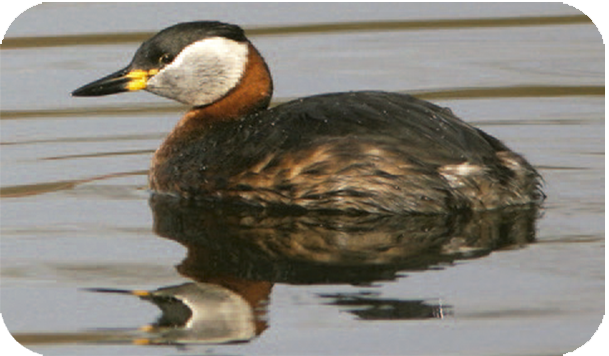
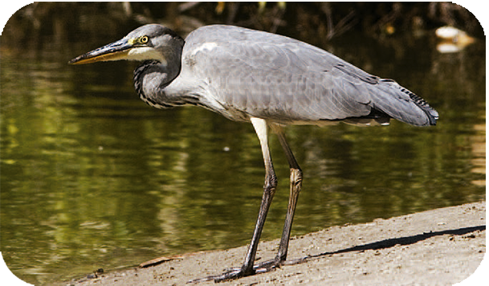
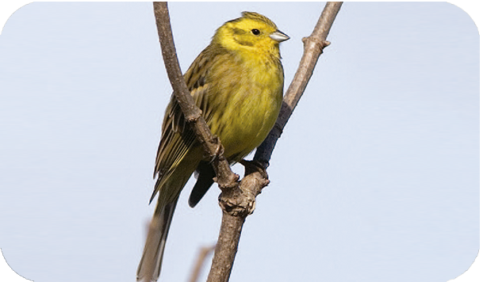
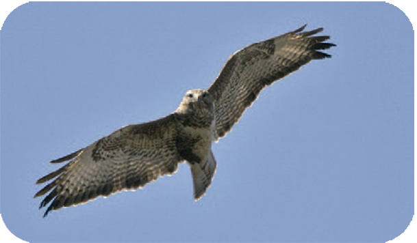
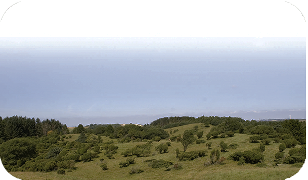
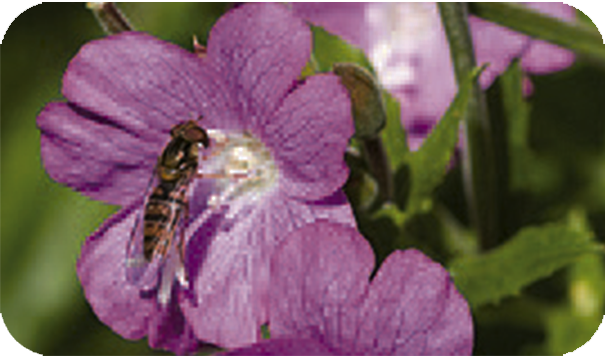
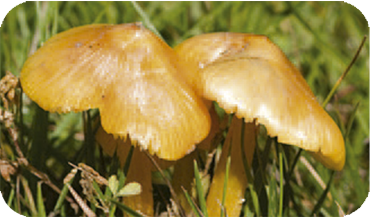
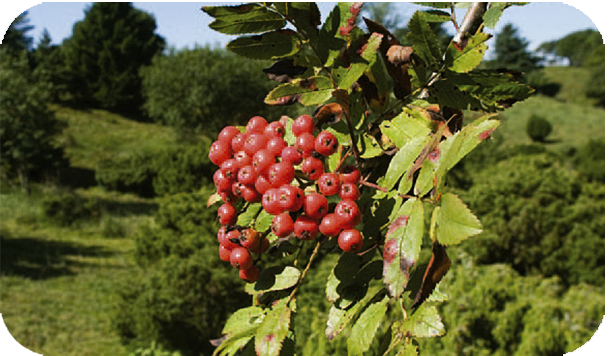

Poulstrup Sø




The area's many habitat types provides a rich and varied wildlife.
In lakes and ponds thrive many aquatic insects, such as goldfish
larvae, backstroke swimmers and vortices.
In the lakes, Gray-throated
Diver, greylag duck, blish hen and Green-legged reed hen. In the spring, the
wetlands are visited in large numbers by frogs, toads and salamanders.




Cattle grazing of the overgrown provides a great species richness with character plants like sand beard, heather, Wavy pile, broom, mountain reed warblers and blueberries.